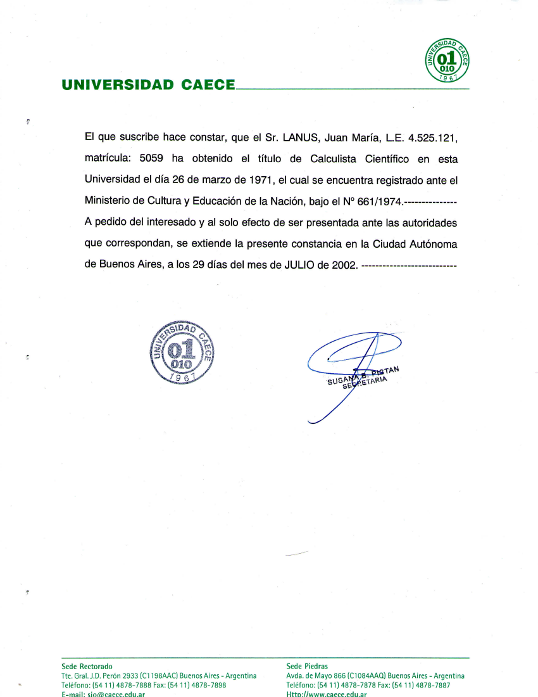

What can I do
I do interaction design, that is, I design the way users will interact with the application's user interface (UI).
This is not graphics design, which is more related to the looks of the UI in a static way (so you won't see flashy effects in this portfolio purposely kept as plain-vanilla as possible).
Interaction design is related to the way people dynamically interact with the UI.
Some of these pages are intended to showcase actions, each one approached in a slightly innovative way that the appropriate users should be able to perform with ease once they get to know the purpose of its context.
Why should you care?
You should if you publish web sites or applications and want your public to use them happily.
It's pretty basic. If they get stuck, or if the interaction requires too much effort, thay just leave. It happened to all of us, so many times.
The users approach your application with a purpose, and good interactions (high usability) is intended for them to fulfill that purpose with ease, without even noticing it. Like when you go to a building and use the elevator with no effort (no cognitive load).
Usable by design
Good interaction is designed on purpose, up front, before writing the first line of code.
If done so then coding comes out much faster (30% cheaper was reported), and the application itself is accepted by the users also much faster.
The other way is to come out with a dubious UI and turn it acceptable after several rounds of user testing.
It's coming out with a good UI and to make it excellent with user testing vs. to start with a mediocre UI and turn it acceptable after the same or more user testing.
The interaction defects are expensive to fix once the application is written, so the best policy is to fix them at the outset.
This is done by writing definitions of the interaction before going graphical, and checking them with the users or their proxies.
Quick interaction prototypes
Samples of working prototypes created to showcase innovative interactions.
Instead of trying to explain an interaction context in words, these prototypes just show how it works, for real, leaving out any uncertainty.
The prototypes have low visual fidelity (they are not styled) but they are high-fidelity on the functionality side.
Click on one to open it in a new window, return by clicking the [x] box at the top right corner.
-
Food selector: The requirement was to allow the users to select items from a rather lengthy set where the structure of the data was known to be hierarchical.
-
List manager: The use case was about managing a big number of columns of a grid, allowing to select and reorder them.
There is also a number of locked columns, that are displayed the first, and thus need to be grouped.
Although the grid allows to manage its columns through direct action, this implies lots of horizontal scrolling and is usable only for small changes. -
Contextual help: A wireframe showcasing a set of recommendations on how to implement contextual help in a portal-like huge application so it's consistent across all pages, also allowing to decouple and reuse the help development effort.
-
Acrylic sheets color sampler: This is a small website for an acrylic sheets factory. Its edge is the greater colors offering.
In order to leverage that, the site sports a simple color picker where one can build the palette by clicking on the desired colors.
Applications
-
Exceptions (usable by design)
My client operates a complex system for recording and processing millions of traffic offenses for big argentine province.
This is a desktop application that filters out the tickets raised by a number of vehicles like ambulances or police cars that are excepted.
The challenge was to devise a UI that enabled anyone to operate it. -
News navigation
The underlying interactions scheme was successfully implemented in an "infomercial" web site with a captive audience of 500K users affiliated through the companies they work for.
The site owner uses the site to promote its services, like supermarkets, insurance, hotels, travel services, education and more.
The "news" are mostly articles, somehow like magazine articles, with a mix of interesting information and promotion of related goods and services provided by The Company.
Writings
I'm good at writing, both in Spanish and in English..
All of my work involves communication, eiher written or through interaction.
These are a few documents, some are attempts to communicate usability engineering.
- Usability Theory:
This is a presentation I gave to the JPMC crew and the BAs in Globant.
It is aimed at developers, especially BAs.
It shows them which is the context where they can inject usability to an application before starting development, as opposed to the usual graphics-design usability that is applied when the application is almost ready to deliver. - Computers vs.People:
This was an assignment for an English course. We were asked to write something and to present it to the rest of the class.
I devised this humorous piece, shedding light on the fact tha the developers tend to be not very good at UI stuff. - Telephony:
A primer on telephony technologies, made while getting ready to work for a telephony company.
Certificates
-
Startup
A course not about any kind of startup, but about internet startups.
Very technical, it involved the development of a crowd funding site.
-

Entrepreneurship 101: Who is your customer?
A course by MIT about the marketing side of a startup.
-

MongoDB
MongoDB is the most representative of the new no-SQL databases.
The course involved several programming assignments requiring to create and use a database mostly through NodeJS servers.
-

English writing
A course on English to hone my skills.
It was quite interesting and I learned a lot about things I was already doing by heart without explicitly knowing the rules.
-

HTML5
A review of all the new HTML features packed in a few weeks course.
HTML is a very basic tool of the trade and, altough many of the new features were around for quite a while, it was good to check them all plus a few that were new to me.
-

Congreso Educativo 2017
Participation in an education congress as listener.
Education became a significant subject when I started thinking of my "Democom" project.
-

Democracia y Políticas Públicas
An excellent course on Democracy and Public Policies by Universitat Autònoma de Barcelona.
Public policies became a significant subject when I started thinking of my "Democom" project.
-

Graded as "Calculista Científico"
Graded with a Scientific Calculist tertiary title in Universidad CAECE.
The syllabus included mostly Algebra, Mathematics, Logic and CS courses.